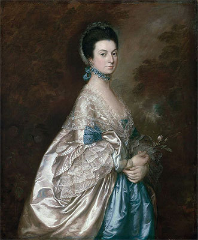
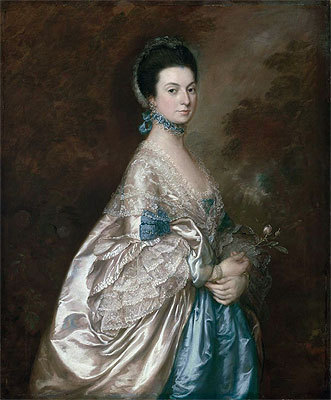

Baroness Danglars
Family: Baron Danglars (husband), Eugénie Danglars (son)
Although she and Baron Danglars are married, they have lived seperate lives for over seven years, each with their own lovers. She is the mistress of Lucien Debray. Using her husband's money, she and Debray manipulate stocks to gain large sums of money. When Danglars discovers her scheme, Debray splits the money with her and they part ways.
Before Baron Danglars, Madame Danglars had an affair with Monsieur de Villefort. She gave birth to their child in secrecy at Villefort's wife's family estate. The estate would later be bought by the Count of Monte Cristo.
 
